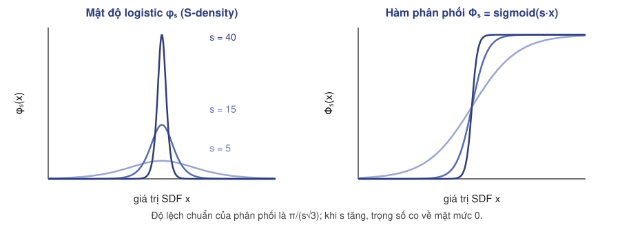
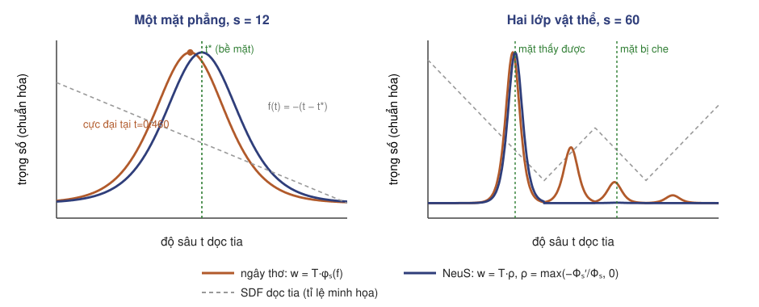
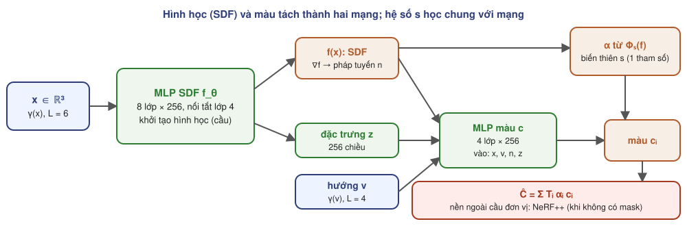
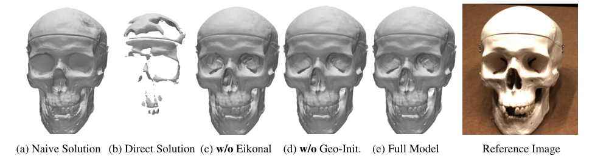
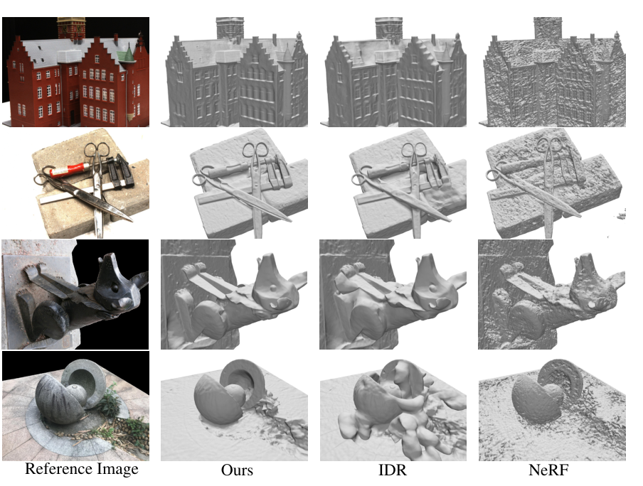
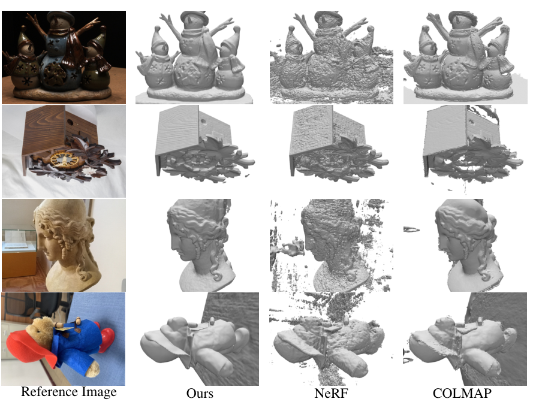
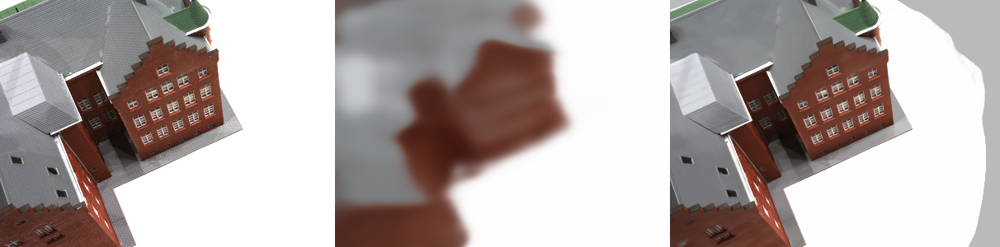
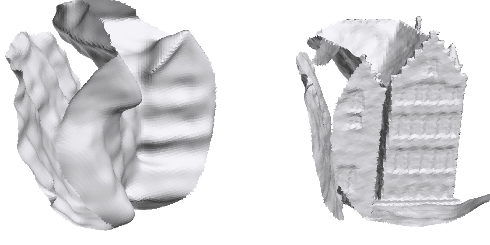

NeuS: Học bề mặt ẩn nơ-ron bằng kết xuất thể tích
Chuyên đề 02 · Tái tạo bề mặt từ ảnh đa góc nhìn
Wang, Liu, Liu, Theobalt, Komura, Wang · NeurIPS 2021
Seminar nhóm nghiên cứu tái tạo 3D · Tháng 9/2026
Kiến thức nền và ký hiệu
Từ chuyên đề 01
- Kết xuất thể tích $\hat C=\sum_i T_i\alpha_i\mathbf c_i$.
- Mã hóa vị trí, lấy mẫu phân cấp.
- Nhận xét: mặt mức của mật độ NeRF nhiễu.
Hình học
- SDF $f:\mathbb R^3\to\mathbb R$, âm bên trong, dương bên ngoài.
- Marching Cubes trích lưới tam giác từ trường vô hướng.
Quy ước
- Tia $\mathbf p(t)=\mathbf o+t\mathbf v$, $\|\mathbf v\|=1$.
- $f_\theta$: SDF do MLP biểu diễn; $\mathcal S=\{\mathbf x:f_\theta(\mathbf x)=0\}$.
- $\phi_s$, $\Phi_s$: hàm mật độ và hàm phân phối logistic.
- $s\gt 0$: tham số độ sắc, học được.
- $w(t)$: trọng số kết xuất dọc tia.
- $t^*$: vị trí giao đầu tiên của tia với $\mathcal S$.
Mục tiêu của chuyên đề
Hiểu
- Khác biệt giữa kết xuất bề mặt và kết xuất thể tích khi tối ưu.
- Vì sao cách chuyển SDF thành mật độ đơn giản gây lệch bề mặt.
- Suy dẫn mật độ mờ đục (opaque density) và điều kiện không lệch.
Vận dụng và đánh giá
- Tính $\alpha_i$ rời rạc từ giá trị SDF tại các điểm mẫu.
- Đọc bảng Chamfer trên DTU và bảng ablation.
- Nêu chi phí, giới hạn và các hướng kế thừa.
Năm chặng nội dung
A.
Tái tạo bề mặt đa góc nhìn

Hai họ kết xuất khả vi
| Kết xuất bề mặt (IDR, DVR) | Kết xuất thể tích (NeRF) | NeuS | |
|---|---|---|---|
| Biểu diễn | SDF hoặc occupancy | mật độ $\sigma$ | SDF |
| Điểm nhận gradient | một điểm giao tia–bề mặt | mọi điểm mẫu trên tia | mọi điểm mẫu, tập trung quanh $t^*$ |
| Đổi độ sâu đột ngột | dễ kẹt cực tiểu cục bộ | xử lý được | xử lý được |
| Mặt nạ tiền cảnh | bắt buộc | không cần | không bắt buộc |
| Chất lượng bề mặt | tốt khi hội tụ | nhiễu, phụ thuộc ngưỡng | mặt mức 0, sạch |
Biểu diễn bề mặt bằng SDF
Định nghĩa
Dấu âm bên trong vật, dương bên ngoài.
Tính chất dùng trong NeuS
- Pháp tuyến $\mathbf n=\nabla f/\|\nabla f\|$ lấy được bằng lan truyền ngược.
- Phương trình Eikonal $\|\nabla f\|=1$ hầu khắp nơi.
- Trích lưới: Marching Cubes trên lưới $512^3$ khi xuất kết quả.
B.
Từ SDF đến trọng số kết xuất
Mật độ logistic (S-density)

S-density: $\phi_s(f(\mathbf x))$, đạt cực đại trên $\mathcal S$. Paper gọi $1/s$ là độ lệch chuẩn; $s$ học được và tăng dần khi huấn luyện.
Hai yêu cầu đối với hàm trọng số
Không lệch (unbiased)
Nếu tia cắt bề mặt tại $\mathbf p(t^*)$, tức $f(\mathbf p(t^*))=0$, thì $w(t)$ đạt cực đại địa phương tại $t^*$.
Pixel nhận màu chủ yếu từ đúng điểm bề mặt.
Nhận biết che khuất (occlusion-aware)
Nếu $t_0\lt t_1$ và $f(t_0)=f(t_1)$ thì $w(t_0)\gt w(t_1)$.
Giữa hai điểm cùng khoảng cách tới bề mặt, điểm gần camera đóng góp nhiều hơn.
Hai lời giải đơn giản và vì sao thất bại

Ngây thơ: $\sigma=\phi_s(f)$
$w=T\sigma$ nhận biết che khuất nhưng lệch: $T$ giảm dần nên cực đại dời về phía camera.
Trực tiếp: chuẩn hóa $\phi_s$
$w=\phi_s(f)/\int\phi_s(f)$ không lệch nhưng không nhận biết che khuất: mặt bị che vẫn có trọng số.
Suy dẫn mật độ mờ đục
- Trường hợp một mặt phẳng: $f(\mathbf p(t))=-|\cos\theta|(t-t^*)$. Chọn $w(t)=|\cos\theta|\,\phi_s(f(\mathbf p(t)))$, không lệch và có tổng bằng 1.
- Nhận xét: $|\cos\theta|\,\phi_s(f(\mathbf p(t)))=-\dfrac{d\Phi_s(f(\mathbf p(t)))}{dt}$.
- Kết xuất thể tích cho $w=T\rho=-\dfrac{dT}{dt}$. Đồng nhất hai vế: $T(t)=\Phi_s\big(f(\mathbf p(t))\big)$.
- Lấy logarit: $\displaystyle\int_0^t\rho(u)\,du=-\ln\Phi_s\big(f(\mathbf p(t))\big)$, đạo hàm hai vế: $\rho(t)=\dfrac{-\frac{d\Phi_s}{dt}(f(\mathbf p(t)))}{\Phi_s(f(\mathbf p(t)))}$.
- Tổng quát nhiều giao điểm: đoạn SDF tăng cho $\rho\lt0$, nên cắt về 0 bằng $\max(\cdot,0)$.
Định lý không lệch bậc nhất
Định lý 1. Cho bề mặt trơn $\mathcal S=\{f=0\}$ và tia $\mathbf p(t)$ đi từ ngoài vào trong $\mathcal S$ tại $t^*$, với $f(\mathbf p(t))$ giảm đơn điệu trên một khoảng $[t_l,t_r]\ni t^*$. Nếu trên khoảng đó bề mặt được xấp xỉ bởi một mảnh phẳng tiếp xúc ($\nabla f$ coi là hằng), thì $w(t)$ tính từ $\rho$ đạt cực đại tại $t^*$.
Hệ quả
- Không lệch ở bậc xấp xỉ thứ nhất của SDF, kể cả khi tia cắt nhiều bề mặt.
- Không cần giả thiết gì về các bề mặt nằm giữa camera và điểm xét.
Giới hạn của định lý
- Độ cong lớn so với $1/s$ làm xấp xỉ phẳng kém đi.
- Chỉ nói về vị trí cực đại, không nói về độ rộng của $w$.
Rời rạc hóa
Độ mờ đục rời rạc
Kết xuất
$\alpha_i$ tính tại điểm biên đoạn $\mathbf q_i$; màu $\mathbf c_i$ tính tại điểm giữa đoạn.
C.
Mạng, hàm mất mát và huấn luyện
Màu
L1 giữa màu kết xuất và màu pixel.
Eikonal
Buộc $\|\nabla f\|\approx1$.
Mặt nạ (tùy chọn)
BCE giữa tổng trọng số và mặt nạ.
Kiến trúc

| Mạng | SDF $f_\theta$ | Màu $c$ | Biến thiên $s$ | Nền NeRF++ |
|---|---|---|---|---|
| Số tham số (checkpoint cục bộ) | 0,53 triệu | 0,27 triệu | 1 | 0,61 triệu |
Hàm mất mát
Màu (L1)
Bền với ngoại lai hơn L2.
Eikonal
Trên mọi điểm mẫu.
Mặt nạ
Chỉ khi có mặt nạ.
| Cấu hình mã nguồn | $\lambda$ (Eikonal) | $\beta$ (mặt nạ) | Batch |
|---|---|---|---|
| w/ mask | 0,1 | 0,1 | 512 tia |
| w/o mask | 0,1 | 0 | 512 tia |
Lấy mẫu phân cấp và mô hình nền
Một mạng, bốn vòng tinh chỉnh
- 64 điểm đều trên tia trong hình cầu đơn vị.
- Lặp $k=4$ lần: ước lượng phân phối từ $\phi_s(f)$ với $s$ cố định $=32\cdot2^i$, rút thêm 16 điểm.
- Tổng cộng 128 điểm cho SDF và màu.
- Không mặt nạ: thêm 32 điểm ngoài hình cầu cho NeRF++.
Khác với NeRF
- Không có mạng thô riêng: phân phối thô tính từ chính $f_\theta$ với $s$ cố định.
- $s$ tăng theo vòng lặp nên điểm mẫu dồn dần về bề mặt.
- Nền xa được tách ra, tránh việc SDF phải giải thích bầu trời hay bàn.
Thiết lập huấn luyện
| Mục | Giá trị |
|---|---|
| Vùng quan tâm | nằm trong hình cầu đơn vị (chuẩn hóa bằng ma trận tỉ lệ của dữ liệu) |
| Tối ưu | Adam; lr tăng tuyến tính 0 → $5\times10^{-4}$ trong 5k vòng đầu, rồi giảm cosine tới $2{,}5\times10^{-5}$ |
| Số vòng lặp | 300k, batch 512 tia |
| Thời gian | 14 giờ (w/ mask), 16 giờ (w/o mask) trên một RTX 2080Ti |
| Khởi tạo | SDF hình cầu; $s\approx20$ |
| Xuất lưới | Marching Cubes độ phân giải 512 trên mặt mức 0 |
| Kết xuất ảnh 1600×1200 | khoảng 320 s; khoảng 60 s nếu dùng sphere tracing để khoanh vùng lấy mẫu |
Giả mã một vòng huấn luyện
- Chọn một ảnh, lấy 512 pixel ngẫu nhiên; tính tia $(\mathbf o,\mathbf v)$ và đoạn giao với hình cầu đơn vị.
- Lấy 64 điểm đều; lặp 4 lần: tính $f$, dựng phân phối với $s=32\cdot2^i$, rút 16 điểm mới.
- Tại 128 điểm: $f_\theta$, $\nabla f_\theta$ (lan truyền ngược), đặc trưng $\mathbf z$, màu $c(\mathbf x,\mathbf v,\mathbf n,\mathbf z)$.
- $\alpha_i$ từ $\Phi_s$ tại điểm biên; $T_i=\prod_{j\lt i}(1-\alpha_j)$; cộng màu nền NeRF++ với trọng số còn lại.
- $\mathcal L=\mathcal L_{\text{color}}+0{,}1\,\mathcal L_{\text{reg}}\,(+\beta\,\mathcal L_{\text{mask}})$; một bước Adam cho $\theta$, mạng màu, NeRF++ và $s$.
D.
Thí nghiệm và benchmark
DTU
15 cảnh, 49 hoặc 64 ảnh 1600×1200, có mặt nạ.
BlendedMVS
7 cảnh khó, 31–143 ảnh 768×576.
Tái chạy cục bộ
Mã nguồn chính thức, RTX 2060 6 GB.
Dữ liệu, độ đo và phương pháp so sánh
Khoảng cách Chamfer (DTU)
$P$: điểm lấy từ lưới dựng được; $Q$: đám mây điểm quét laser. Đơn vị mm, thấp hơn là tốt.
Phương pháp so sánh
- IDR: kết xuất bề mặt, cần mặt nạ.
- NeRF: lưới từ mặt mức mật độ, ngưỡng 25.
- COLMAP: MVS cổ điển + Screened Poisson.
- UNISURF: occupancy + kết xuất thể tích (đồng thời với NeuS).
Chamfer trên DTU (Bảng 1)
| Scan | Có mặt nạ | Không mặt nạ | |||||
|---|---|---|---|---|---|---|---|
| IDR | NeRF | NeuS | COLMAP | NeRF | UNISURF | NeuS | |
| 24 | 1,63 | 1,83 | 0,83 | 0,81 | 1,90 | 1,32 | 1,00 |
| 37 | 1,87 | 2,39 | 0,98 | 2,05 | 1,60 | 1,36 | 1,37 |
| 40 | 0,63 | 1,79 | 0,56 | 0,73 | 1,85 | 1,72 | 0,93 |
| 55 | 0,48 | 0,66 | 0,37 | 1,22 | 0,58 | 0,44 | 0,43 |
| 63 | 1,04 | 1,79 | 1,13 | 1,79 | 2,28 | 1,35 | 1,10 |
| 65 | 0,79 | 1,44 | 0,59 | 1,58 | 1,27 | 0,79 | 0,65 |
| 69 | 0,77 | 1,50 | 0,60 | 1,02 | 1,47 | 0,80 | 0,57 |
| 83 | 1,33 | 1,20 | 1,45 | 3,05 | 1,67 | 1,49 | 1,48 |
| 97 | 1,16 | 1,96 | 0,95 | 1,40 | 2,05 | 1,37 | 1,09 |
| 105 | 0,76 | 1,27 | 0,78 | 2,05 | 1,07 | 0,89 | 0,83 |
| 106 | 0,67 | 1,44 | 0,52 | 1,00 | 0,88 | 0,59 | 0,52 |
| 110 | 0,90 | 2,61 | 1,43 | 1,32 | 2,53 | 1,47 | 1,20 |
| 114 | 0,42 | 1,04 | 0,36 | 0,49 | 1,06 | 0,46 | 0,35 |
| 118 | 0,51 | 1,13 | 0,45 | 0,78 | 1,15 | 0,59 | 0,49 |
| 122 | 0,53 | 0,99 | 0,45 | 1,17 | 0,96 | 0,62 | 0,54 |
| TB | 0,90 | 1,54 | 0,77 | 1,36 | 1,49 | 1,02 | 0,84 |
Ablation hàm trọng số và chính quy hóa

| (a) Ngây thơ | (b) Trực tiếp | (c) Không Eikonal | (d) Không khởi tạo hình học | (e) Đầy đủ | |
|---|---|---|---|---|---|
| Chamfer ↓ | 1,49 | 4,45 | 0,64 | 0,62 | 0,59 |
| MAE của SDF ↓ | 1,75 | 44,34 | 88,94 | 6,19 | 0,93 |
Định tính: có mặt nạ

Định tính: không mặt nạ

Chất lượng ảnh so với NeRF
Tổng hợp góc nhìn mới (DTU, không mặt nạ)
| PSNR TB ↑ | SSIM TB ↑ | |
|---|---|---|
| NeRF | 29,31 | 0,826 |
| NeuS | 28,55 | 0,820 |
Giữ lại 10% ảnh mỗi cảnh làm tập kiểm tra.
Chi phí kết xuất (1600×1200, RTX 2080Ti)
| Chiến lược lấy mẫu | Thời gian | PSNR TB |
|---|---|---|
| Mặc định (thể tích) | ≈ 320 s | 31,97 |
| Sphere tracing khoanh vùng | ≈ 60 s | 30,85 |
Tái chạy cục bộ trên RTX 2060 6 GB
| Checkpoint | Cảnh | PSNR (1/4 độ phân giải, 3 view) | Ghi chú |
|---|---|---|---|
| Tự huấn luyện 1k vòng | DTU scan 24 | 17,30 dB | 6 phút 51 giây; đỉnh 5104 MiB |
| Pretrained 300k vòng | DTU scan 24 | 26,42 dB | lưới MC128: 70 264 đỉnh |
| Pretrained 300k vòng | DTU scan 37 | 24,52 dB | — |
| Pretrained 300k vòng | BlendedMVS bear | 28,26 dB | — |
Ảnh kết quả từ lần tái chạy


E.
Tồn tại và hướng kế thừa
Chi phí
14–16 giờ huấn luyện; khoảng 5 phút mỗi ảnh.
Giả thiết
Vật đóng, trong hình cầu đơn vị, có kết cấu.
Biểu diễn
Một $s$ toàn cục; MLP làm trơn chi tiết.
Hạn chế do tác giả nêu
Vùng không kết cấu
Trường hợp thất bại: vùng kim loại trơn trên tượng thỏ bị tái tạo sai, vì vùng không có kết cấu là mơ hồ đối với mọi phương pháp kết xuất nơ-ron.
Một tham số $s$ cho toàn không gian
Mọi vị trí dùng chung độ sắc $1/s$. Tác giả đề xuất mô hình phương sai thay đổi theo vị trí, tùy theo đặc điểm hình học cục bộ.
Tài nguyên tính toán
Paper thừa nhận phương pháp cần lượng tính toán lớn để huấn luyện mạng (300k vòng, 14–16 giờ trên RTX 2080Ti cho mỗi cảnh).
Chi phí tính toán
| Thành phần | Mỗi tia | Ghi chú |
|---|---|---|
| Điểm mẫu | 64 + 4×16 = 128 trong cầu, 32 ngoài cầu | các vòng lấy mẫu tuần tự |
| Đánh giá SDF | ≈ 128 + 64 lượt (lấy mẫu + chính) | MLP 8 lớp × 256 |
| Gradient SDF | 128 lượt lan truyền ngược bên trong chiều thuận | đạo hàm bậc hai khi huấn luyện |
| Mạng màu và nền | 128 + 32 lượt | MLP 4 lớp và NeRF++ |
Hạn chế của mô hình
Giả thiết hình học
- SDF chỉ biểu diễn bề mặt đóng, có trong và ngoài; mặt mở (lá, vải mỏng) không có dấu rõ ràng.
- Vật phải nằm trong hình cầu đơn vị; cảnh lớn cần tách nền bằng mô hình khác.
- Cấu trúc mảnh hơn độ rộng $1/s$ dễ bị lấp hoặc mất.
Giả thiết ngoại hình
- Mỗi tia có một bề mặt đục: khó mô hình vật bán trong suốt, phản xạ gương mạnh.
- PSNR tổng hợp góc nhìn thấp hơn NeRF (28,55 so với 29,31).
- Mạng màu có thể bù cho sai lệch hình học, che giấu lỗi bề mặt.
Các hướng kế thừa
| Hướng | Phương pháp | Ý tưởng chính |
|---|---|---|
| Chuyển SDF thành mật độ khác | VolSDF (NeurIPS 2021) | mật độ = hàm phân phối Laplace của SDF, có cận sai số lấy mẫu |
| UNISURF (ICCV 2021) | occupancy, thu hẹp vùng lấy mẫu theo lịch | |
| Tăng tốc, tăng chi tiết | NeuS2 (ICCV 2023) | lưới băm đa phân giải, CUDA; huấn luyện trong vài phút |
| Neuralangelo (CVPR 2023) | lưới băm, gradient số, thô tới tinh; cảnh lớn | |
| Tiên nghiệm hình học | MonoSDF (NeurIPS 2022) | độ sâu và pháp tuyến đơn ảnh làm giám sát phụ |
| Mặt mở | NeUDF (CVPR 2023) | hàm khoảng cách không dấu |
| Bề mặt từ Gaussian | SuGaR (CVPR 2024) | ép Gaussian bám bề mặt rồi trích lưới |
| 2DGS (SIGGRAPH 2024) | Gaussian phẳng 2D (surfel), độ sâu nhất quán |
Tóm tắt NeuS
| Thành phần | Công thức | Vai trò |
|---|---|---|
| Bề mặt | $\mathcal S=\{f_\theta(\mathbf x)=0\}$ | hình học tường minh, trích lưới bằng MC |
| Độ truyền qua | $T(t)=\Phi_s(f(\mathbf p(t)))$ (mặt phẳng) | xác suất còn ở ngoài vật |
| Mật độ mờ đục | $\rho=\max(-\tfrac{d\Phi_s}{dt}/\Phi_s,0)$ | trọng số không lệch, nhận biết che khuất |
| Độ mờ đục rời rạc | $\alpha_i=\max\big((\Phi_s(f_i)-\Phi_s(f_{i+1}))/\Phi_s(f_i),0\big)$ | dạng đóng, không xấp xỉ thêm |
| Mất mát | $\mathcal L_{\text{color}}+0{,}1\,\mathcal L_{\text{Eik}}(+\beta\mathcal L_{\text{mask}})$ | SDF thật, không cần mặt nạ |
Câu hỏi thảo luận
- Câu hỏi: chứng minh trọng số ngây thơ $w=T\phi_s(f)$ có cực đại trước $t^*$ khi tia cắt vuông góc một mặt phẳng.
- Câu hỏi: nếu $s$ bị cố định ở giá trị nhỏ suốt quá trình huấn luyện, bề mặt và ảnh kết xuất thay đổi thế nào?
- Câu hỏi: vì sao bỏ Eikonal vẫn cho Chamfer tốt nhưng MAE của SDF rất lớn?
- Câu hỏi: muốn dùng công thức $\alpha_i$ của NeuS trong một biểu diễn tường minh (lưới hay ô Voronoi), cần lưu gì tại mỗi phần tử?
Tài liệu tham khảo
- Wang, P. et al. (2021). NeuS: Learning Neural Implicit Surfaces by Volume Rendering for Multi-view Reconstruction. NeurIPS. arXiv:2106.10689.
- Yariv, L. et al. (2020). IDR. NeurIPS · Yariv, L. et al. (2021). VolSDF. NeurIPS.
- Oechsle, M. et al. (2021). UNISURF. ICCV.
- Gropp, A. et al. (2020). Implicit Geometric Regularization for Learning Shapes. ICML.
- Wang, Y. et al. (2023). NeuS2. ICCV · Li, Z. et al. (2023). Neuralangelo. CVPR.
- Mã nguồn: github.com/Totoro97/NeuS; báo cáo nội bộ
NEUS_MAIN_RUNNING.md.